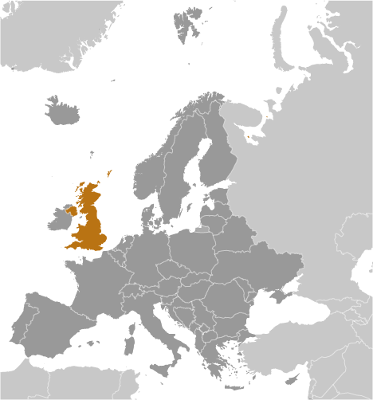
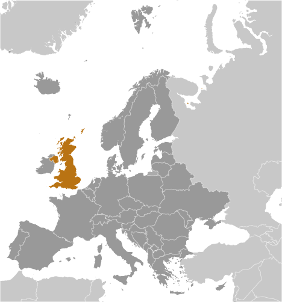

Europe :: UNITED KINGDOM
Introduction :: UNITED KINGDOM
-
The United Kingdom has historically played a leading role in developing parliamentary democracy and in advancing literature and science. At its zenith in the 19th century, the British Empire stretched over one-fourth of the earth's surface. The first half of the 20th century saw the UK's strength seriously depleted in two world wars and the Irish Republic's withdrawal from the union. The second half witnessed the dismantling of the Empire and the UK rebuilding itself into a modern and prosperous European nation. As one of five permanent members of the UN Security Council and a founding member of NATO and the Commonwealth, the UK pursues a global approach to foreign policy. The Scottish Parliament, the National Assembly for Wales, and the Northern Ireland Assembly were established in 1998. The latter was suspended from October 2002 until May 2007 due to wrangling over the peace process.The UK has been an active member of the EU since its accession in 1973, although it chose to remain outside the Economic and Monetary Union. However, motivated in part by frustration at a remote bureaucracy in Brussels and massive migration into the country, UK citizens on 23 June 2016 narrowly voted to leave the EU. The so-called “Brexit” (British exit) will take at least two years to carry out but could help trigger referenda in other EU countries where skepticism of EU membership benefits is strong.
Geography :: UNITED KINGDOM
-
Western Europe, islands - including the northern one-sixth of the island of Ireland - between the North Atlantic Ocean and the North Sea; northwest of France54 00 N, 2 00 WEuropetotal: 243,610 sq kmland: 241,930 sq kmwater: 1,680 sq kmnote: includes Rockall and Shetland Islandscountry comparison to the world: 81twice the size of Pennsylvania; slightly smaller than Oregontotal: 443 kmborder countries (1): Ireland 443 km12,429 kmterritorial sea: 12 nmexclusive fishing zone: 200 nmcontinental shelf: as defined in continental shelf orders or in accordance with agreed upon boundariestemperate; moderated by prevailing southwest winds over the North Atlantic Current; more than one-half of the days are overcastmostly rugged hills and low mountains; level to rolling plains in east and southeastmean elevation: 162 melevation extremes: lowest point: The Fens -4 mhighest point: Ben Nevis 1,343 mcoal, petroleum, natural gas, iron ore, lead, zinc, gold, tin, limestone, salt, clay, chalk, gypsum, potash, silica sand, slate, arable landagricultural land: 71%arable land 25.1%; permanent crops 0.2%; permanent pasture 45.7%forest: 11.9%other: 17.1% (2011 est.)950 sq km (2012)the core of the population lies in and around London, with significant clusters found in central Britain around Manchester and Liverpool, in the Scottish lowlands between Edinburgh and Glasgow, southern Wales in and around Cardiff, and far eastern Northern Ireland centered on Belfastwinter windstorms; floodscontinues to reduce greenhouse gas emissions, but air pollution remains a concern, particularly in the London region; soil pollution from pesticides and heavy metals; decline in marine and coastal habitats brought on by pressures from housing, tourism, and industryparty to: Air Pollution, Air Pollution-Nitrogen Oxides, Air Pollution-Persistent Organic Pollutants, Air Pollution-Sulfur 94, Air Pollution-Volatile Organic Compounds, Antarctic-Environmental Protocol, Antarctic-Marine Living Resources, Antarctic Seals, Antarctic Treaty, Biodiversity, Climate Change, Climate Change-Kyoto Protocol, Desertification, Endangered Species, Environmental Modification, Hazardous Wastes, Law of the Sea, Marine Dumping, Marine Life Conservation, Ozone Layer Protection, Ship Pollution, Tropical Timber 83, Tropical Timber 94, Wetlands, Whalingsigned, but not ratified: none of the selected agreementslies near vital North Atlantic sea lanes; only 35 km from France and linked by tunnel under the English Channel (the Channel Tunnel or Chunnel); because of heavily indented coastline, no location is more than 125 km from tidal waters
People and Society :: UNITED KINGDOM
-
64,769,452 (July 2017 est.)country comparison to the world: 22noun: Briton(s), British (collective plural)adjective: Britishwhite 87.2%, black/African/Caribbean/black British 3%, Asian/Asian British: Indian 2.3%, Asian/Asian British: Pakistani 1.9%, mixed 2%, other 3.7% (2011 est.)Englishnote: the following are recognized regional languages: Scots (about 30% of the population of Scotland), Scottish Gaelic (about 60,000 in Scotland), Welsh (about 20% of the population of Wales), Irish (about 10% of the population of Northern Ireland), Cornish (some 2,000 to 3,000 in Cornwall) (2012 est.)Christian (includes Anglican, Roman Catholic, Presbyterian, Methodist) 59.5%, Muslim 4.4%, Hindu 1.3%, other 2%, unspecified 7.2%, none 25.7% (2011 est.)0-14 years: 17.53% (male 5,819,363/female 5,532,123)15-24 years: 11.9% (male 3,938,643/female 3,770,511)25-54 years: 40.55% (male 13,387,903/female 12,873,090)55-64 years: 11.98% (male 3,843,268/female 3,918,244)65 years and over: 18.04% (male 5,246,475/female 6,439,832) (2017 est.)total dependency ratio: 55.5youth dependency ratio: 27.4elderly dependency ratio: 28.2potential support ratio: 3.5 (2015 est.)total: 40.5 yearsmale: 39.3 yearsfemale: 41.7 years (2017 est.)country comparison to the world: 440.52% (2017 est.)country comparison to the world: 15712.1 births/1,000 population (2017 est.)country comparison to the world: 1669.4 deaths/1,000 population (2017 est.)country comparison to the world: 552.5 migrant(s)/1,000 population (2017 est.)country comparison to the world: 39the core of the population lies in and around London, with significant clusters found in central Britain around Manchester and Liverpool, in the Scotish lowlands between Endinburgh and Glasgow, southern Wales in and around Cardiff, and far eastern Northern Ireland centered on Belfasturban population: 83.1% of total population (2017)rate of urbanization: 0.82% annual rate of change (2015-20 est.)LONDON (capital) 10.313 million; Manchester 2.646 million; Birmingham 2.515 million; Glasgow 1.223 million; Southampton/Portsmouth 882,000; Liverpool 870,000 (2015)at birth: 1.05 male(s)/female0-14 years: 1.05 male(s)/female15-24 years: 1.04 male(s)/female25-54 years: 1.04 male(s)/female55-64 years: 0.98 male(s)/female65 years and over: 0.81 male(s)/femaletotal population: 0.99 male(s)/female (2016 est.)28.5 yearsnote: data represent England and Wales only (2014 est.)9 deaths/100,000 live births (2015 est.)country comparison to the world: 153total: 4.3 deaths/1,000 live birthsmale: 4.7 deaths/1,000 live birthsfemale: 3.9 deaths/1,000 live births (2017 est.)country comparison to the world: 185total population: 80.8 yearsmale: 78.6 yearsfemale: 83.1 years (2017 est.)country comparison to the world: 351.88 children born/woman (2017 est.)country comparison to the world: 14284%note: percent of women aged 16-49 (2008/09)9.1% of GDP (2014)country comparison to the world: 382.81 physicians/1,000 population (2015)2.9 beds/1,000 population (2011)improved:urban: 100% of populationrural: 100% of populationtotal: 100% of populationunimproved:urban: 0% of populationrural: 0% of populationtotal: 0% of population (2015 est.)improved:urban: 99.1% of populationrural: 99.6% of populationtotal: 99.2% of populationunimproved:urban: 0.9% of populationrural: 0.4% of populationtotal: 0.8% of population (2015 est.)NANANA27.8% (2016)country comparison to the world: 365.8% of GDP (2014)country comparison to the world: 36total: 18 yearsmale: 17 yearsfemale: 18 years (2014)total: 14.6%male: 16.2%female: 12.9% (2015 est.)country comparison to the world: 52
Government :: UNITED KINGDOM
-
conventional long form: United Kingdom of Great Britain and Northern Ireland; note - the island of Great Britain includes England, Scotland, and Walesconventional short form: United Kingdomabbreviation: UKetymology: self-descriptive country name; the designation "Great Britain," in the sense of "Larger Britain," dates back to medieval times and was used to distinguish the island from "Little Britain," or Brittany in modern France; the name Ireland derives from the Gaelic "Eriu," the matron goddess of Ireland (goddess of the land)parliamentary constitutional monarchy; a Commonwealth realmname: Londongeographic coordinates: 51 30 N, 0 05 Wtime difference: UTC 0 (5 hours ahead of Washington, DC, during Standard Time)daylight saving time: +1hr, begins last Sunday in March; ends last Sunday in Octobernote: applies to the United Kingdom proper, not to its Crown dependencies or overseas territoriesEngland: 27 two-tier counties, 32 London boroughs and 1 City of London or Greater London, 36 metropolitan districts, 56 unitary authorities (including 4 single-tier counties*)two-tier counties: Buckinghamshire, Cambridgeshire, Cumbria, Derbyshire, Devon, Dorset, East Sussex, Essex, Gloucestershire, Hampshire, Hertfordshire, Kent, Lancashire, Leicestershire, Lincolnshire, Norfolk, North Yorkshire, Northamptonshire, Nottinghamshire, Oxfordshire, Somerset, Staffordshire, Suffolk, Surrey, Warwickshire, West Sussex, WorcestershireLondon boroughs and City of London or Greater London: Barking and Dagenham, Barnet, Bexley, Brent, Bromley, Camden, Croydon, Ealing, Enfield, Greenwich, Hackney, Hammersmith and Fulham, Haringey, Harrow, Havering, Hillingdon, Hounslow, Islington, Kensington and Chelsea, Kingston upon Thames, Lambeth, Lewisham, City of London, Merton, Newham, Redbridge, Richmond upon Thames, Southwark, Sutton, Tower Hamlets, Waltham Forest, Wandsworth, Westminstermetropolitan districts: Barnsley, Birmingham, Bolton, Bradford, Bury, Calderdale, Coventry, Doncaster, Dudley, Gateshead, Kirklees, Knowlsey, Leeds, Liverpool, Manchester, Newcastle upon Tyne, North Tyneside, Oldham, Rochdale, Rotherham, Salford, Sandwell, Sefton, Sheffield, Solihull, South Tyneside, St. Helens, Stockport, Sunderland, Tameside, Trafford, Wakefield, Walsall, Wigan, Wirral, Wolverhamptonunitary authorities: Bath and North East Somerset, Blackburn with Darwen, Bedford, Blackpool, Bournemouth, Bracknell Forest, Brighton and Hove, City of Bristol, Central Bedfordshire, Cheshire East, Cheshire West and Chester, Cornwall, Darlington, Derby, Durham County*, East Riding of Yorkshire, Halton, Hartlepool, Herefordshire*, Isle of Wight*, Isles of Scilly, City of Kingston upon Hull, Leicester, Luton, Medway, Middlesbrough, Milton Keynes, North East Lincolnshire, North Lincolnshire, North Somerset, Northumberland*, Nottingham, Peterborough, Plymouth, Poole, Portsmouth, Reading, Redcar and Cleveland, Rutland, Shropshire, Slough, South Gloucestershire, Southampton, Southend-on-Sea, Stockton-on-Tees, Stoke-on-Trent, Swindon, Telford and Wrekin, Thurrock, Torbay, Warrington, West Berkshire, Wiltshire, Windsor and Maidenhead, Wokingham, YorkNorthern Ireland: 5 borough councils, 4 district councils, 2 city councilsborough councils: Antrim and Newtownabbey; Ards and North Down; Armagh, Banbridge, and Craigavon; Causeway Coast and Glens; Mid and East Antrimdistrict councils: Derry and Strabane; Fermanagh and Omagh; Mid Ulster; Newry, Murne, and Downcity councils: Belfast; Lisburn and CastlereaghScotland: 32 council areascouncil areas: Aberdeen City, Aberdeenshire, Angus, Argyll and Bute, Clackmannanshire, Dumfries and Galloway, Dundee City, East Ayrshire, East Dunbartonshire, East Lothian, East Renfrewshire, City of Edinburgh, Eilean Siar (Western Isles), Falkirk, Fife, Glasgow City, Highland, Inverclyde, Midlothian, Moray, North Ayrshire, North Lanarkshire, Orkney Islands, Perth and Kinross, Renfrewshire, Shetland Islands, South Ayrshire, South Lanarkshire, Stirling, The Scottish Borders, West Dunbartonshire, West LothianWales: 22 unitary authoritiesunitary authorities: Blaenau Gwent, Bridgend, Caerphilly, Cardiff, Carmarthenshire, Ceredigion, Conwy, Denbighshire, Flintshire, Gwynedd, Isle of Anglesey, Merthyr Tydfil, Monmouthshire, Neath Port Talbot, Newport, Pembrokeshire, Powys, Rhondda Cynon Taff, Swansea, The Vale of Glamorgan, Torfaen, WrexhamAnguilla, Bermuda, British Indian Ocean Territory, British Virgin Islands, Cayman Islands, Falkland Islands, Gibraltar, Montserrat, Pitcairn Islands, Saint Helena, Ascension, and Tristan da Cunha, South Georgia and the South Sandwich Islands, Turks and Caicos Islands12 April 1927 (Royal and Parliamentary Titles Act establishes current name of the United Kingdom of Great Britain and Northern Ireland); notable earlier dates: 927 (minor English kingdoms united); 3 March 1284 (enactment of the Statute of Rhuddlan uniting England and Wales); 1536 (Act of Union formally incorporates England and Wales); 1 May 1707 (Acts of Union formally unite England and Scotland as Great Britain); 1 January 1801 (Acts of Union formally unite Great Britain and Ireland as the United Kingdom of Great Britain and Ireland); 6 December 1921 (Anglo-Irish Treaty formalizes partition of Ireland; six counties remain part of the United Kingdom and Northern Ireland)the UK does not celebrate one particular national holidayhistory: unwritten; partly statutes, partly common law and practiceamendments: proposed as a “bill” for an “Act of Parliament” by the government, by the House of Commons, or by the House of Lords; passage requires agreement by both houses and by the monarch (Royal Assent); note - recent additions include the Human Rights Act of 1998, the Constitutional Reform and Governance Act 2010, the Parliamentary Voting System and Constituencies Act 2011, the Fixed-term Parliaments Act 2011, and the House of Lords (Expulsion and Suspension) Act 2015 (2016)common law system; has nonbinding judicial review of Acts of Parliament under the Human Rights Act of 1998accepts compulsory ICJ jurisdiction with reservations; accepts ICCt jurisdictioncitizenship by birth: nocitizenship by descent only: at least one parent must be a citizen of the United Kingdomdual citizenship recognized: yesresidency requirement for naturalization: 5 years18 years of age; universalchief of state: Queen ELIZABETH II (since 6 February 1952); Heir Apparent Prince CHARLES, son of the queen (born 14 November 1948)head of government: Prime Minister Theresa MAY (Conservative) (since 13 July 2016)cabinet: Cabinet appointed by the prime ministerelections/appointments: the monarchy is hereditary; following legislative elections, the leader of the majority party or majority coalition usually becomes the prime minister; election last held on 8 June 2017 (next to be held by 5 May 2022)description: bicameral Parliament consists of the House of Lords (membership not fixed; as of December 2016, 809 lords were eligible to participate in the work of the House of Lords - 692 life peers, 91 hereditary peers, and 26 clergy; members are appointed by the monarch on the advice of the prime minister and non-party political members recommended by the House of Lords Appointments Commission), and the House of Commons (650 seats; members directly elected in single-seat constituencies by simple majority popular vote to serve 5-year terms unless the House is dissolved earlier)elections: House of Lords - no elections; note - in 1999, as provided by the House of Lords Act, elections were held in the House of Lords to determine the 92 hereditary peers who would remain; elections held only as vacancies in the hereditary peerage arise); House of Commons - last held on 8 June 2017 (next to be held by 5 May 2022)election results: House of Commons - percent of vote by party - Conservative 48.8%, Labor 40.3%, SNP 5.4%, Lib Dems 1.8%, DUP 1.5%, Sinn Fein 1.1%, Plaid Cymru 0.6%,other 0.6%; seats by party - Conservative 317, Labor 262, SNP 35, Lib Dems 12, DUP 10, Sinn Fein 7, Plaid Cymru 4, other 3highest court(s): Supreme Court (consists of 12 justices including the court president and deputy president); note - the Supreme Court was established by the Constitutional Reform Act 2005 and implemented in October 2009, replacing the Appellate Committee of the House of Lords as the highest court in the United Kingdomjudge selection and term of office: judge candidates selected by an independent committee of several judicial commissions, followed by their recommendations to the prime minister, and appointed by the monarch; justices appointed for lifesubordinate courts: England and Wales - Court of Appeal (civil and criminal divisions); High Court; Crown Court; County Courts; Magistrates' Courts; Scotland - Court of Sessions; Sheriff Courts; High Court of Justiciary; tribunals; Northern Ireland - Court of Appeal in Northern Ireland; High Court; county courts; magistrates' courts; specialized tribunalsAlliance Party (Northern Ireland) [Naomi LONG]Conservative and Unionist Party [Theresa MAY]Democratic Unionist Party or DUP (Northern Ireland) [Arlene FOSTER]Green Party of England and Wales or Greens [Caroline LUCAS and Jonathan BARTLEY]Labor (Labour) Party [Jeremy CORBYN]Liberal Democrats (Lib Dems) [Vince CABLE]Party of Wales (Plaid Cymru) [Leanne WOOD]Scottish National Party or SNP [Nicola STURGEON]Sinn Fein (Northern Ireland) [Gerry ADAMS]Social Democratic and Labor Party or SDLP (Northern Ireland) [Colum EASTWOOD]Ulster Unionist Party or UUP (Northern Ireland) [Robin SWANN]UK Independence Party or UKIP [Henry BOLTON]Campaign for Nuclear DisarmamentConfederation of British IndustryNational Farmers' UnionTrades Union CongressADB (nonregional member), AfDB (nonregional member), Arctic Council (observer), Australia Group, BIS, C, CBSS (observer), CD, CDB, CE, CERN, EAPC, EBRD, ECB, EIB, EITI (implementing country), ESA, EU, FAO, FATF, G-5, G-7, G-8, G-10, G-20, IADB, IAEA, IBRD, ICAO, ICC (national committees), ICCt, ICRM, IDA, IEA, IFAD, IFC, IFRCS, IGAD (partners), IHO, ILO, IMF, IMO, IMSO, Interpol, IOC, IOM, IPU, ISO, ITSO, ITU, ITUC (NGOs), MIGA, MINUSMA, MONUSCO, NATO, NEA, NSG, OAS (observer), OECD, OPCW, OSCE, Pacific Alliance (observer), Paris Club, PCA, PIF (partner), SELEC (observer), SICA (observer), UN, UNCTAD, UNESCO, UNFICYP, UNHCR, UNMISS, UNRWA, UNSC (permanent), UPU, WCO, WHO, WIPO, WMO, WTO, ZCchief of mission: Ambassador Sir Nigel Kim DARROCH (since 28 January 2016)chancery: 3100 Massachusetts Avenue NW, Washington, DC 20008telephone: [1] (202) 588-6500FAX: [1] (202) 588-7870consulate(s) general: Atlanta, Boston, Chicago, Denver, Houston, Los Angeles, Miami, New York, San Franciscoconsulate(s): Orlando (FL), San Juan (Puerto Rico)chief of mission: Ambassador Robert Wood JOHNSON IV (since 29 August 2017)embassy: 24 Grosvenor Square, London, W1K 6AH; note - a new embassy is scheduled to open by the end of 2017 in the Nine Elms area of Wandsworthmailing address: PSC 801, Box 40, FPO AE 09498-4040telephone: [44] (0) 20 7499-9000FAX: [44] (0) 20 7629-9124consulate(s) general: Belfast, Edinburghblue field with the red cross of Saint George (patron saint of England) edged in white superimposed on the diagonal red cross of Saint Patrick (patron saint of Ireland), which is superimposed on the diagonal white cross of Saint Andrew (patron saint of Scotland); properly known as the Union Flag, but commonly called the Union Jack; the design and colors (especially the Blue Ensign) have been the basis for a number of other flags including other Commonwealth countries and their constituent states or provinces, and British overseas territorieslion (Britain in general); lion, Tudor rose, oak (England); lion, unicorn, thistle (Scotland); dragon, daffodil, leek (Wales); shamrock, flax (Northern Ireland); national colors: red, white, blue (Britain in general); red, white (England); blue, white (Scotland); red, white, green (Wales)name: "God Save the Queen"lyrics/music: unknownnote: in use since 1745; by tradition, the song serves as both the national and royal anthem of the UK; it is known as either "God Save the Queen" or "God Save the King," depending on the gender of the reigning monarch; it also serves as the royal anthem of many Commonwealth nations
Economy :: UNITED KINGDOM
-
The UK, a leading trading power and financial center, is the third largest economy in Europe after Germany and France. Agriculture is intensive, highly mechanized, and efficient by European standards, producing about 60% of food needs with less than 2% of the labor force. The UK has large coal, natural gas, and oil resources, but its oil and natural gas reserves are declining; the UK has been a net importer of energy since 2005. Services, particularly banking, insurance, and business services, are key drivers of British GDP growth. Manufacturing, meanwhile, has declined in importance but still accounts for about 10% of economic output.In 2008, the global financial crisis hit the economy particularly hard, due to the importance of its financial sector. Falling home prices, high consumer debt, and the global economic slowdown compounded Britain's economic problems, pushing the economy into recession in the latter half of 2008 and prompting the then BROWN (Labour) government to implement a number of measures to stimulate the economy and stabilize the financial markets. Facing burgeoning public deficits and debt levels, in 2010 the then CAMERON-led coalition government (between Conservatives and Liberal Democrats) initiated an austerity program, which has continued under the new Conservative majority government. However, the deficit still remains one of the highest in the G7, standing at 4.1% of GDP as of mid-2016, and Britain has pledged to lower its corporation tax from 20% to 17% by 2020. Britain had a debt burden of 92.2% GDP at the end of 2016.While the UK is one of the fastest growing economies in the G7, economists are concerned about the potential negative impact of the UK’s vote to leave the EU. The UK has an extensive trade relationship with other EU members through its single market membership and economic observers have warned the exit will jeopardize its position as the central location for European financial services.$2.785 trillion (2016 est.)$2.701 trillion (2015 est.)$2.615 trillion (2014 est.)note: data are in 2016 dollarscountry comparison to the world: 10$2.629 trillion (2016 est.)1.8% (2016 est.)2.2% (2015 est.)3.1% (2014 est.)country comparison to the world: 144$42,400 (2016 est.)$42,000 (2015 est.)$41,400 (2014 est.)note: data are in 2016 dollarscountry comparison to the world: 3812.6% of GDP (2016 est.)13% of GDP (2015 est.)12.7% of GDP (2014 est.)country comparison to the world: 143household consumption: 65.1%government consumption: 19%investment in fixed capital: 16.7%investment in inventories: 1.2%exports of goods and services: 28.2%imports of goods and services: -30.1% (2016 est.)agriculture: 0.6%industry: 19.2%services: 80.2%(2016 est.)cereals, oilseed, potatoes, vegetables; cattle, sheep, poultry; fishmachine tools, electric power equipment, automation equipment, railroad equipment, shipbuilding, aircraft, motor vehicles and parts, electronics and communications equipment, metals, chemicals, coal, petroleum, paper and paper products, food processing, textiles, clothing, other consumer goods1.5% (2016 est.)country comparison to the world: 12633.36 million (2016 est.)country comparison to the world: 18agriculture: 1.3%industry: 15.2%services: 83.5% (2014 est.)4.9% (2016 est.)5.4% (2015 est.)country comparison to the world: 6415% (2013 est.)lowest 10%: 1.7%highest 10%: 31.1% (2012)32.4 (2012)33.4 (2010)country comparison to the world: 111revenues: $1.029 trillionexpenditures: $1.107 trillion (2016 est.)39.2% of GDP (2016 est.)country comparison to the world: 43-2.9% of GDP (2016 est.)country comparison to the world: 11689.3% of GDP (2016 est.)89% of GDP (2015 est.)note: data cover general government debt, and include debt instruments issued (or owned) by government entities other than the treasury; the data include treasury debt held by foreign entities; the data include debt issued by subnational entities, as well as intra-governmental debt; intra-governmental debt consists of treasury borrowings from surpluses in the social funds, such as for retirement, medical care, and unemployment; debt instruments for the social funds are not sold at public auctionscountry comparison to the world: 266 April - 5 April0.7% (2016 est.)0.4% (2015 est.)country comparison to the world: 850.25% (31 December 2016)0.5% (31 December 2015)country comparison to the world: 1414.44% (31 December 2016 est.)4.51% (31 December 2015 est.)country comparison to the world: 153$96.15 billion (31 December 2016 est.)$106.7 billion (31 December 2015 est.)country comparison to the world: 37$2.778 trillion (31 December 2016 est.)$3.125 trillion (31 December 2015 est.)country comparison to the world: 6$2.785 trillion (31 December 2016 est.)$3.195 trillion (31 December 2015 est.)country comparison to the world: 9$3.019 trillion (31 December 2012 est.)$2.903 trillion (31 December 2011 est.)$3.107 trillion (31 December 2010 est.)country comparison to the world: 6$-114.5 billion (2016 est.)$-122.6 billion (2015 est.)country comparison to the world: 199$407.3 billion (2016 est.)$439.4 billion (2015 est.)country comparison to the world: 11manufactured goods, fuels, chemicals; food, beverages, tobaccoUS 14.8%, Germany 10.7%, France 6.4%, Netherlands 6.2%, Ireland 5.6%, Switzerland 4.6%, China 4.4% (2016)$588.4 billion (2016 est.)$622.3 billion (2015 est.)country comparison to the world: 5manufactured goods, machinery, fuels; foodstuffsGermany 13.6%, US 9.3%, China 9.2%, Netherlands 7.4%, France 5.2%, Belgium 4.9%, Switzerland 4.5% (2016)$135 billion (31 December 2016 est.)$129.6 billion (31 December 2015 est.)country comparison to the world: 18$8.126 trillion (31 March 2016 est.)$8.642 trillion (31 March 2015 est.)country comparison to the world: 3$1.858 trillion (31 December 2016 est.)$2.04 trillion (31 December 2015 est.)country comparison to the world: 4$1.611 trillion (31 December 2016 est.)$1.89 trillion (31 December 2015 est.)country comparison to the world: 6British pounds (GBP) per US dollar -0.738 (2016 est.)0.738 (2015 est.)0.607 (2014 est.)0.6391 (2013 est.)0.6324 (2012 est.)
Energy :: UNITED KINGDOM
-
electrification - total population: 100% (2016)309.8 billion kWh (2015 est.)country comparison to the world: 13301.6 billion kWh (2015 est.)country comparison to the world: 122.153 billion kWh (2016 est.)country comparison to the world: 4419.7 billion kWh (2016 est.)country comparison to the world: 1294.64 million kW (2015 est.)country comparison to the world: 1455.6% of total installed capacity (2015 est.)country comparison to the world: 1409.4% of total installed capacity (2015 est.)country comparison to the world: 171.9% of total installed capacity (2015 est.)country comparison to the world: 13833.4% of total installed capacity (2015 est.)country comparison to the world: 9933,000 bbl/day (2016 est.)country comparison to the world: 21636,200 bbl/day (2016 est.)country comparison to the world: 20808,800 bbl/day (2016 est.)country comparison to the world: 162.564 billion bbl (1 January 2017 es)country comparison to the world: 321.28 million bbl/day (2016 est.)country comparison to the world: 161.586 million bbl/day (2016 est.)country comparison to the world: 16632,200 bbl/day (2016 est.)country comparison to the world: 11941,200 bbl/day (2016 est.)country comparison to the world: 741.34 billion cu m (2015 est.)country comparison to the world: 19186.2 billion cu m (2015 est.)country comparison to the world: 714.22 billion cu m (2015 est.)country comparison to the world: 1844.5 billion cu m (2015 est.)country comparison to the world: 8207.2 billion cu m (1 January 2017 es)country comparison to the world: 43568.3 million Mt (2013 est.)country comparison to the world: 11
Communications :: UNITED KINGDOM
-
total subscriptions: 33,510,796subscriptions per 100 inhabitants: 52 (July 2016 est.)country comparison to the world: 9total: 78,529,373subscriptions per 100 inhabitants: 122 (July 2016 est.)country comparison to the world: 20general assessment: technologically advanced domestic and international systemdomestic: equal mix of buried cables, microwave radio relay, and fiber-optic systemsinternational: country code - 44; numerous submarine cables provide links throughout Europe, Asia, Australia, the Middle East, and US; satellite earth stations - 10 Intelsat (7 Atlantic Ocean and 3 Indian Ocean), 1 Inmarsat (Atlantic Ocean region), and 1 Eutelsat; at least 8 large international switching centers (2016)public service broadcaster, British Broadcasting Corporation (BBC), is the largest broadcasting corporation in the world; BBC operates multiple TV networks with regional and local TV service; a mixed system of public and commercial TV broadcasters along with satellite and cable systems provide access to hundreds of TV stations throughout the world; BBC operates multiple national, regional, and local radio networks with multiple transmission sites; a large number of commercial radio stations, as well as satellite radio services are available (2008).uktotal: 61,064,454percent of population: 94.8% (July 2016 est.)country comparison to the world: 10
Transportation :: UNITED KINGDOM
-
number of registered air carriers: 28inventory of registered aircraft operated by air carriers: 1,242annual passenger traffic on registered air carriers: 131,449,680annual freight traffic on registered air carriers: 5,466,504,676 mt-km (2015)G (2016)460 (2013)country comparison to the world: 18total: 271over 3,047 m: 72,438 to 3,047 m: 291,524 to 2,437 m: 89914 to 1,523 m: 80under 914 m: 66 (2013)total: 1891,524 to 2,437 m: 3914 to 1,523 m: 26under 914 m: 160 (2013)9 (2013)condensate 502 km; condensate/gas 9 km; gas 28,603 km; liquid petroleum gas 59 km; oil 5,256 km; oil/gas/water 175 km; refined products 4,919 km; water 255 km (2013)total: 16,837 kmbroad gauge: 303 km 1.600-m gauge (in Northern Ireland)standard gauge: 16,534 km 1.435-m gauge (5,357 km electrified) (2015)country comparison to the world: 16total: 394,428 kmpaved: 394,428 km (includes 3,519 km of expressways) (2009)country comparison to the world: 183,200 km (620 km used for commerce) (2009)country comparison to the world: 31total: 504by type: bulk carrier 33, cargo 76, carrier 4, chemical tanker 58, container 178, liquefied gas 6, passenger 7, passenger/cargo 66, petroleum tanker 18, refrigerated cargo 2, roll on/roll off 31, vehicle carrier 25foreign-owned: 271 (Australia 1, Bermuda 6, China 7, Denmark 43, France 39, Germany 59, Hong Kong 12, Ireland 1, Italy 3, Japan 5, Netherlands 1, Norway 32, Sweden 28, Taiwan 11, Tanzania 1, UAE 8, US 14)registered in other countries: 308 (Algeria 15, Antigua and Barbuda 1, Argentina 2, Australia 5, Bahamas 18, Barbados 6, Belgium 2, Belize 4, Bermuda 14, Bolivia 1, Brunei 2, Cabo Verde 1, Cambodia 1, Cayman Islands 2, Comoros 1, Cook Islands 2, Cyprus 7, Georgia 5, Gibraltar 6, Greece 6, Honduras 1, Hong Kong 33, Indonesia 2, Italy 2, Liberia 22, Liberia 32, Luxembourg 5, Malta 21, Marshall Islands 12, Marshall Islands 3, Moldova 3, Nigeria 2, NZ 1, Panama 37, Panama 5, Saint Kitts and Nevis 1, Saint Vincent and the Grenadines 6, Sierra Leone 1, Singapore 6, Thailand 6, Tonga 1, US 4, unknown 1) (2010)country comparison to the world: 23major seaport(s): Dover, Felixstowe, Immingham, Liverpool, London, Southampton, Teesport (England); Forth Ports (Scotland); Milford Haven (Wales)oil terminal(s): Fawley Marine terminal, Liverpool Bay terminal (England); Braefoot Bay terminal, Finnart oil terminal, Hound Point terminal (Scotland)container port(s) (TEUs): Felixstowe (3,676,000), London (1,185,000), Southampton (2,349,000) (2015)LNG terminal(s) (import): Isle of Grain, Milford Haven, Teesside
Military and Security :: UNITED KINGDOM
-
1.84% of GDP (2016)1.88% of GDP (2015)1.97% of GDP (2014)2.09% of GDP (2013)2.21% of GDP (2012)country comparison to the world: 28Army, Royal Navy (includes Royal Marines), Royal Air Force (2013)16-33 years of age (officers 17-28) for voluntary military service (with parental consent under 18); no conscription; women serve in military services including ground combat roles; must be citizen of the UK, Commonwealth, or Republic of Ireland; reservists serve a minimum of 3 years, to age 45 or 55; 17 years 6 months of age for voluntary military service by Nepalese citizens in the Brigade of Gurkhas; 16-34 years of age for voluntary military service by Papua New Guinean citizens (2016)
Transnational Issues :: UNITED KINGDOM
-
in 2002, Gibraltar residents voted overwhelmingly by referendum to reject any "shared sovereignty" arrangement between the UK and Spain; the Government of Gibraltar insisted on equal participation in talks between the two countries; Spain disapproved of UK plans to grant Gibraltar greater autonomy; Mauritius and Seychelles claim the Chagos Archipelago (British Indian Ocean Territory); in 2001, the former inhabitants of the archipelago, evicted 1967 - 1973, were granted UK citizenship and the right of return, followed by Orders in Council in 2004 that banned rehabitation, a High Court ruling reversed the ban, a Court of Appeal refusal to hear the case, and a Law Lords' decision in 2008 denied the right of return; in addition, the UK created the world's largest marine protection area around the Chagos islands prohibiting the extraction of any natural resources therein; UK rejects sovereignty talks requested by Argentina, which still claims the Falkland Islands (Islas Malvinas) and South Georgia and the South Sandwich Islands; territorial claim in Antarctica (British Antarctic Territory) overlaps Argentine claim and partially overlaps Chilean claim; Iceland, the UK, and Ireland dispute Denmark's claim that the Faroe Islands' continental shelf extends beyond 200 nmrefugees (country of origin): 14,363 (Iran); 13,720 (Eritrea); 9,752 (Afghanistan); 8,790 (Zimbabwe); 8,269 (Syria); 7,326 (Sudan); 6,814 (Pakistan); 5,954 (Somalia); 5,809 (Sri Lanka) (2016)stateless persons: 64 (2016)producer of limited amounts of synthetic drugs and synthetic precursor chemicals; major consumer of Southwest Asian heroin, Latin American cocaine, and synthetic drugs; money-laundering center